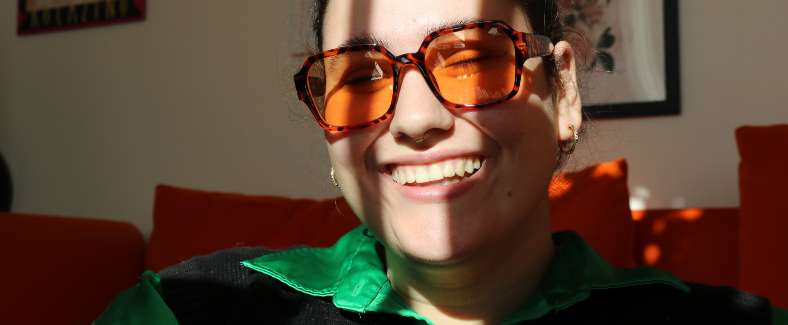

My name is Emma Seddiki and I am a 24-year-old queer creator from Denmark.
My passion for media began when I attended Frederiksberg Filmværksted (Frederiksberg Film Workshop) at the age of 11. It was there I discovered my love for film and the way it impacts its audience. While initially drawn to being in front of the camera, I soon realized the immense value and impact of planning and production. This realization led me to attend Produktionshøjskolen (The Production high school) in Brøndby, where I gained experience as an official production leader.
I finished my bachelors degree as Bachelor of Arts (BA) in Communication and Digital Media, with specialization in Interactive Digital Media which has been fundemental in my understanding of the impact that media has on society. My coursework has exposed me to various aspects of media, including communication through media, website creation and the impact social media has on us. This education has been invaluable in shaping my skills as a creative media professional.
In addition to my academic pursuits, I was fortunate enough to volunteer my skills as a Vice Chairperson and social media creator for Aalborg Pride. This experience has been a meaningful way for me to contribute to an important cause, while also refining my creative abilities. Through this work, I have gained a deeper understanding of the power of social media and its ability to amplify voices and create positive change.
Overall, my passion for media has been a driving force in both my academic and professional endeavors. I am excited to continue exploring this dynamic field and using my skills to make a positive impact in the world.